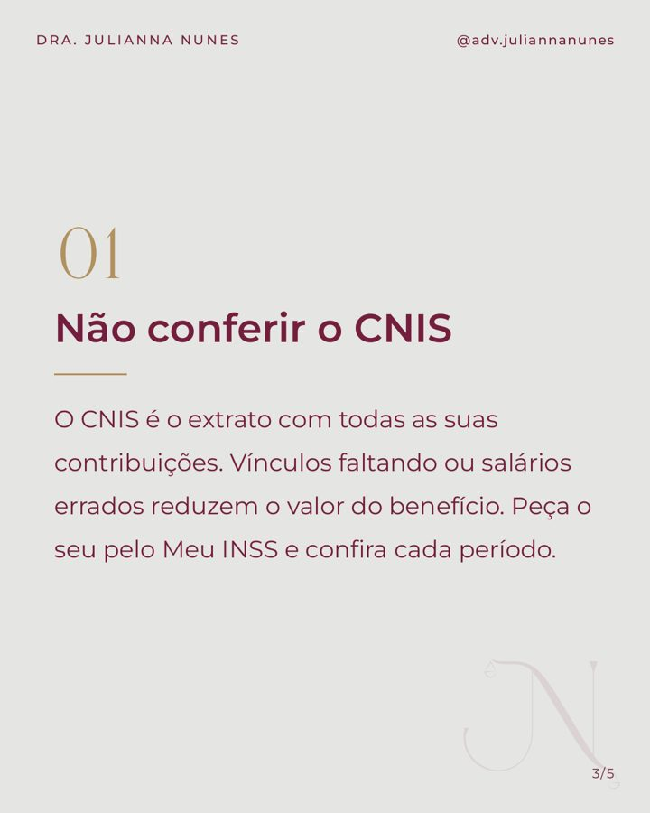

Planeje sua aposentadoria com segurança.
Advocacia previdenciária com análise técnica e atendimento próximo, do primeiro pedido ao recurso.
Fale com a Dra. JuliannaÁreas de atuação
Atuação dedicada ao Direito Previdenciário, para quem vai pedir um benefício, já recebe ou teve o pedido negado.
Aposentadorias
Por idade, por tempo de contribuição, especial e da pessoa com deficiência, com análise das regras de transição.
Auxílio-doença
Hoje chamado de auxílio por incapacidade temporária. Pedido, prorrogação e recurso quando o benefício é negado ou cortado.
Planejamento previdenciário
Um estudo do seu histórico para saber quando e como se aposentar com o melhor valor possível.
Salário-maternidade
Para empregadas, MEIs, autônomas, desempregadas e seguradas especiais.
BPC/LOAS
Benefício assistencial para idosos e pessoas com deficiência em situação de baixa renda.
Pensão por morte
Orientação à família sobre quem tem direito e como fazer o pedido.
Revisões
Conferência do cálculo e dos períodos considerados pelo INSS no seu benefício.
Benefício negado
Entendemos o motivo da negativa e avaliamos recurso administrativo ou ação judicial.
Antes de qualquer pedido ao INSS, vem a análise do seu histórico.
Como funciona o atendimento
- 1
Primeira conversa
Você conta sua situação e tira as primeiras dúvidas.
- 2
Análise dos documentos
CNIS, carteira de trabalho, laudos e o que mais o caso pedir.
- 3
Estratégia
Você recebe a explicação do caminho possível e do que esperar dele.
- 4
Acompanhamento
Cada etapa do pedido ou do processo é informada a você.
 Foto da Dra. Julianna
Foto da Dra. JuliannaPrazer, Julianna Nunes
Sou advogada previdenciária no Rio de Janeiro. Meu trabalho é traduzir as regras do INSS para quem precisa delas: quem está perto de se aposentar, quem teve um benefício negado ou quem só quer entender seus direitos antes de dar o próximo passo.
[Formação, especializações e trajetória da Dra. Julianna: texto a confirmar com ela.]
OAB/RJ 258.890
Conteúdo sobre INSS no Instagram
Regras, prazos e erros comuns explicados em posts curtos.

Dúvidas frequentes
Quando vale procurar uma advogada previdenciária?
Antes de fazer o pedido no INSS, quando o benefício é negado ou cortado, e quando você quer conferir se o valor recebido está correto. Orientação antes do pedido costuma evitar erros difíceis de corrigir depois.
O que é o CNIS e por que ele importa?
É o extrato com todos os seus vínculos e contribuições registrados no INSS. Se faltar algum período ou salário, o benefício pode ser negado ou sair com valor menor. Você consegue o seu pelo Meu INSS.
Meu auxílio-doença foi negado. Ainda dá para fazer algo?
Em muitos casos, sim. Dependendo do motivo, é possível apresentar recurso ao próprio INSS ou entrar com ação na Justiça. O primeiro passo é entender por que o pedido foi negado.
O que é planejamento previdenciário?
É um estudo do seu histórico de contribuições que mostra em quais regras você se encaixa, quando pode se aposentar e qual opção tende a dar o melhor valor.
Quais documentos devo separar?
Documento com foto, CPF, carteiras de trabalho, carnês de contribuição, o CNIS e, quando o caso envolver saúde, laudos e exames. Na primeira conversa você recebe a lista do seu caso.
Tem dúvidas sobre o seu benefício?
Mande uma mensagem e conte sua situação.
(21) 98283-7633